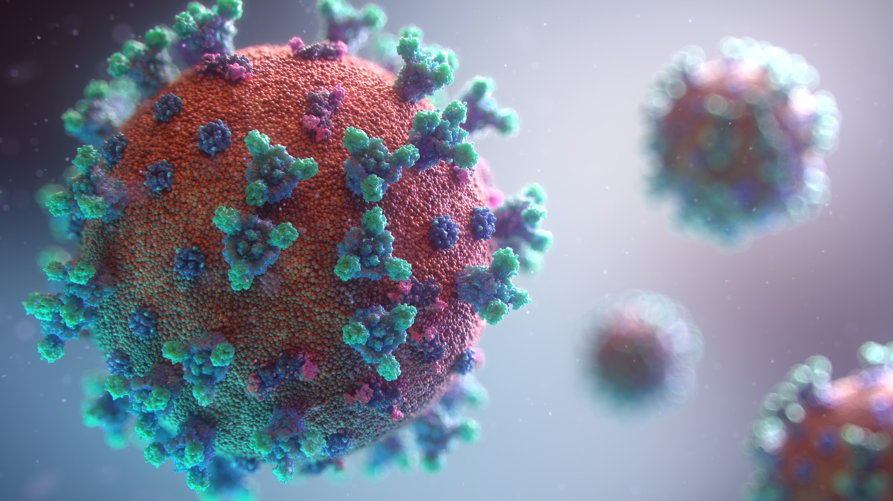

COVID-19 and Our Project
 Fusion Medical Animation
Because COVID-19 derailed just about everything across the entire globe (colleges, concerts, conventions, the Olympics) it is unsurprising that this global pandemic has made many of our previous plans difficult or impossible. However, we would still have all the tools we would need to redo the construction of the motor, and create an engaging website that documents our experience.
The part of our project that had to be put on hold indefinitely was any further attempt to permanently magnetize iron. All of our magnet-making attempts in C-term were performed in the Washburn shops. After our more period-accurate attempts failed, we were using an oxyacetylene torch in the welding room to heat our bar of iron up to the Curie temperature. As previously discussed, one of the problems with our setup was that the neodymium magnets we were using to create our external magnetic field would *also* reach the Curie temperature, therefore losing their magnetic properties in the process, turning our neodymium magnets into neodymium blocks of metal. We realized that if we were going to continue using magnets to create an external magnetic field, we were going to need to insulate our neodymium magnets, which would require a more involved rig. Sam has good experience in designing parts with CAD software and machining those parts out of aluminum stock. With the machine shop no longer at our disposal, this plan became infeasible.
Over spring break, we met at Sam's house multiple times to restore the woodworking of the motor from the previous IQP team. While we were productive during the times that we met, national stay-at-home orders put an end to our in person meetups. In order to adapt to these new restrictions on our abilities to collaborate, we split up the work accordingly: Sam would focus on finalizing the physical motor, and Cole would focus on putting together the custom website.